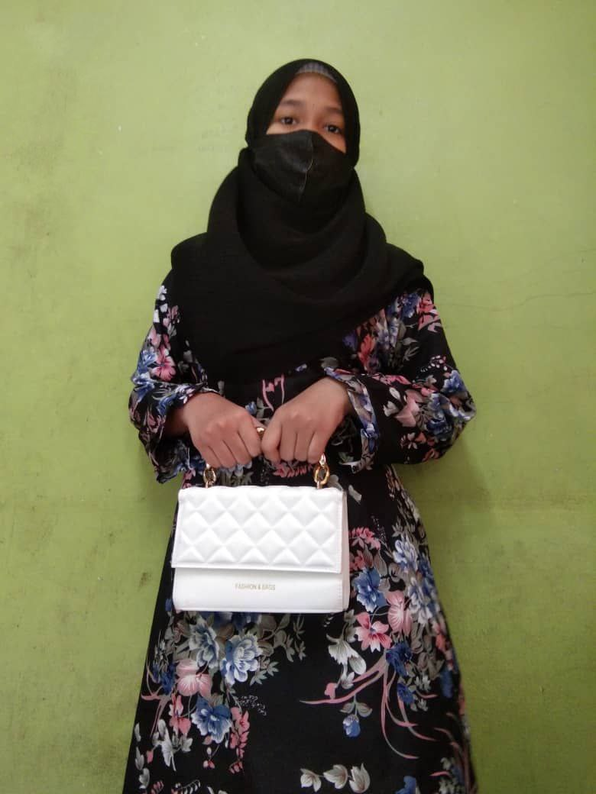
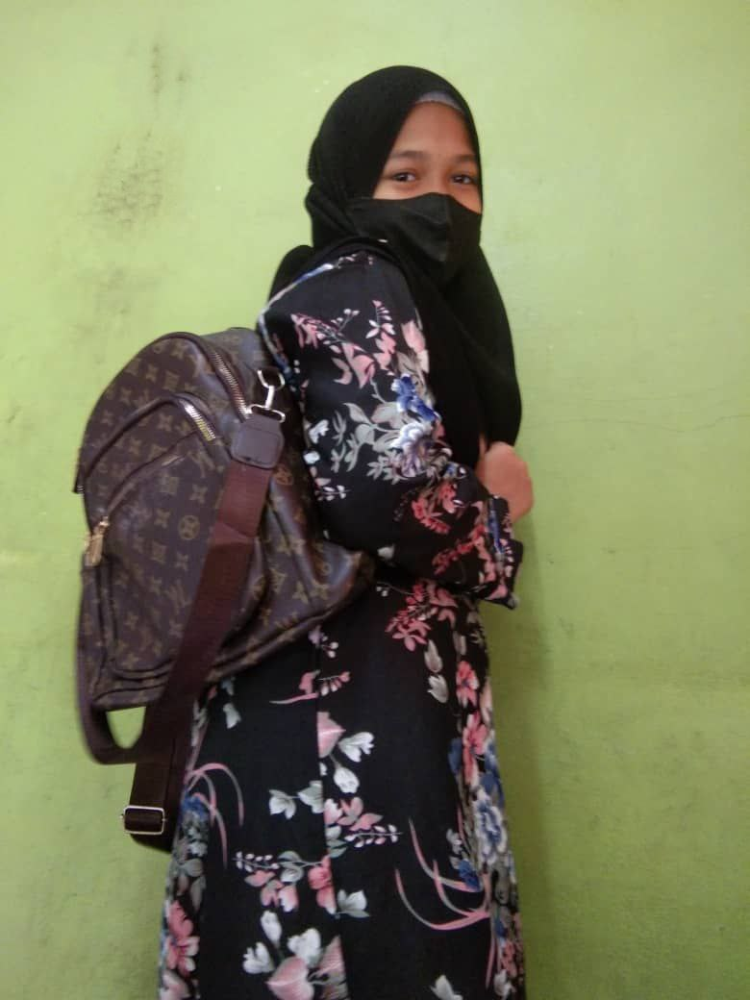
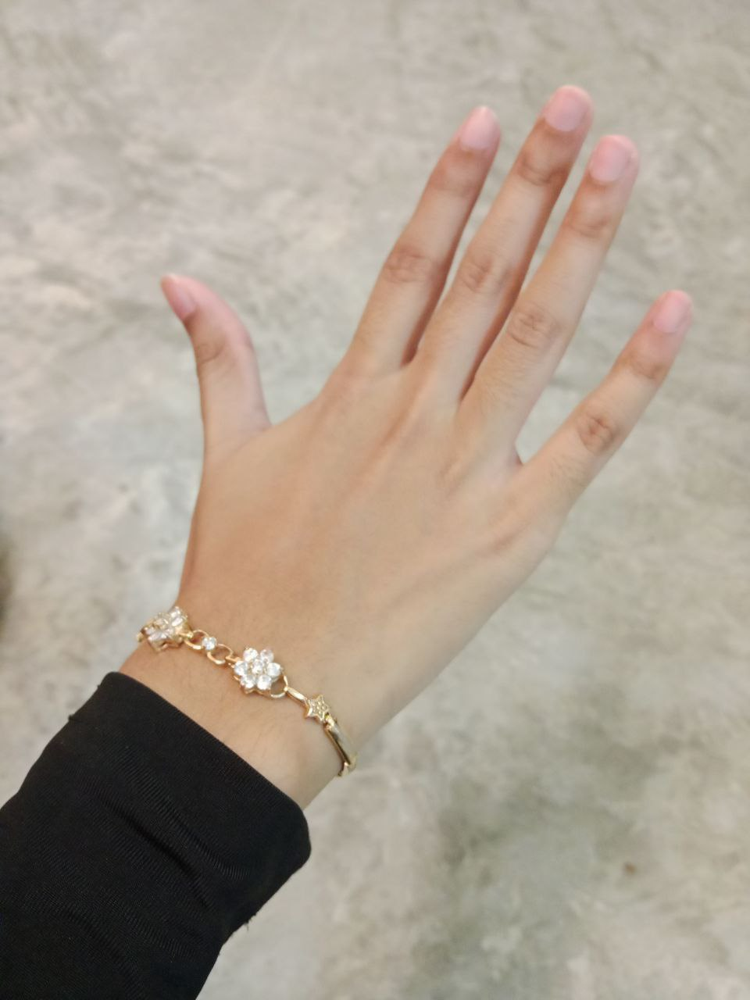
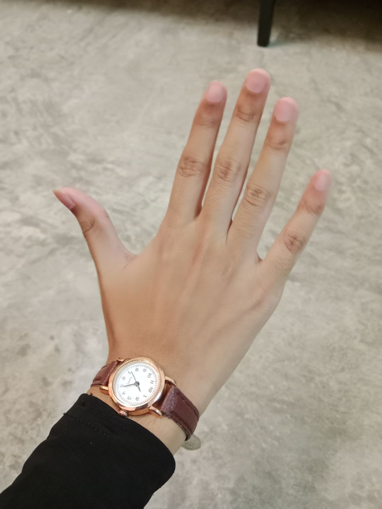
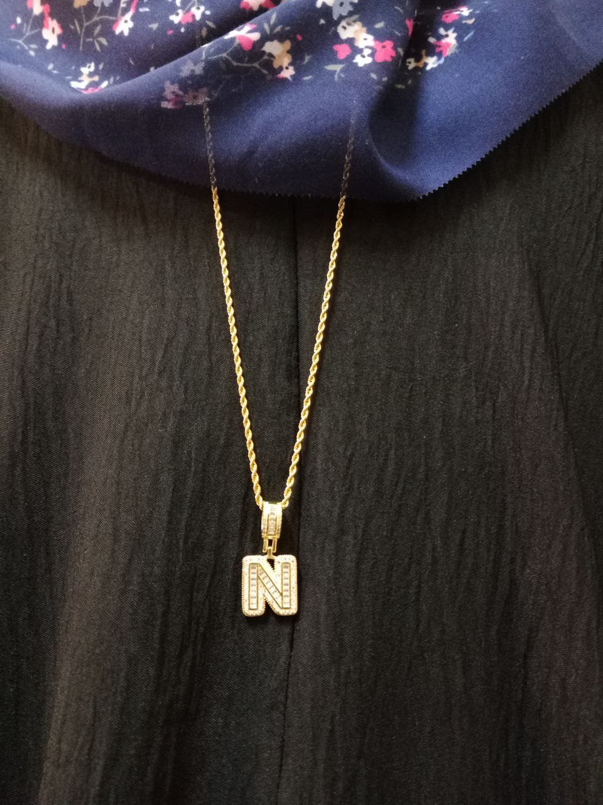
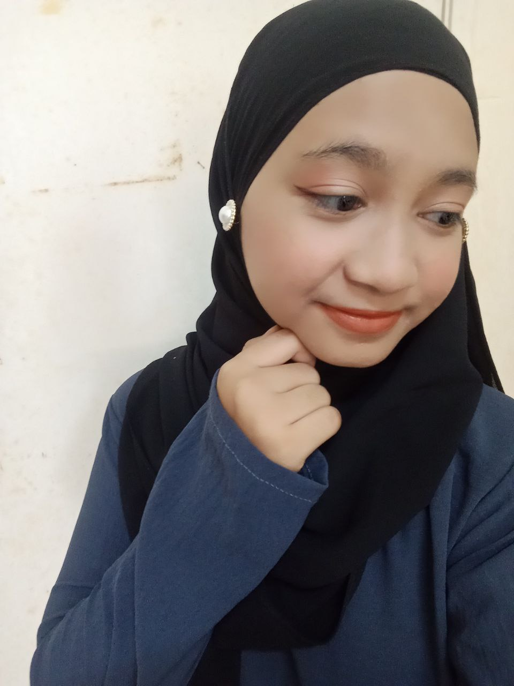
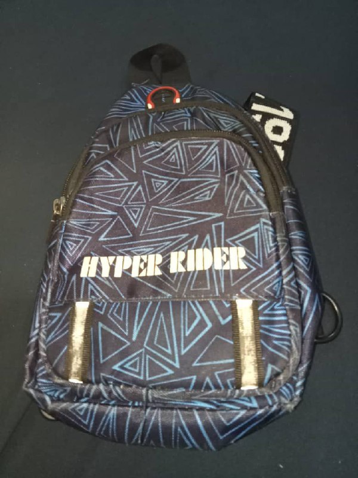
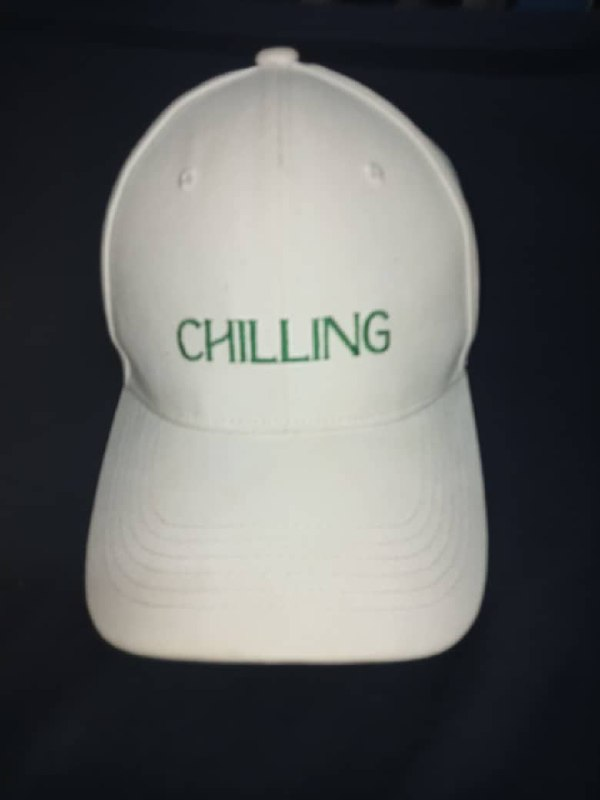
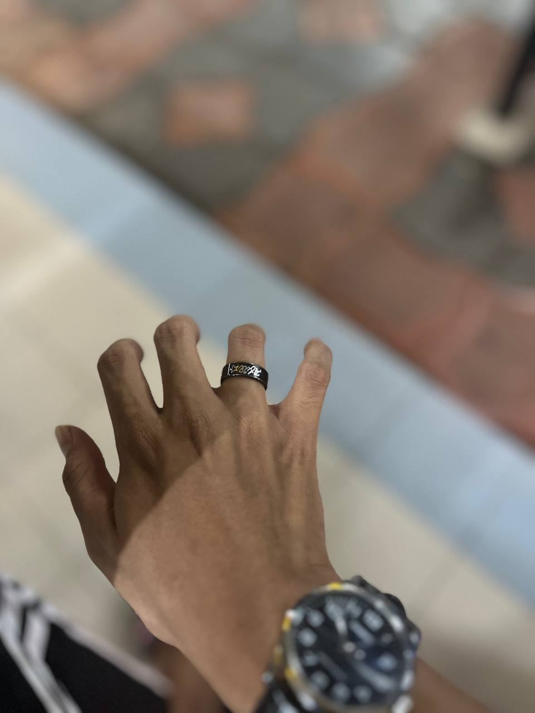

The simplest accessory we can use is a handbag, which we may accessorize with any outfit as long as it fits.

The Korean style backpack. Teens love these bags so much that they always use them as a backpack when they go to class. Mothers love this bag as well, especially the ones who have kids because it makes storing baby stuff simple.

These bracelets are more contemporary and thinner. Typically, children and teenagers adore these kinds of bracelets.

Women's watches are always people most favored accessories to wear. It also goes well with any style, and there are many different kinds of watches such as sport watches to everyday ones.

Chain is an accessory that not everyone wears. However, it can also be worn as an accessory. To make the chain more appropriate, we must learn how to match different types of chain with different outfits.

Hijab earrings are not worn as accessories by everyone. This kind of accessories also depends on the outfit. Usually people will wear this earrings with shawl with certain style of hijab. It is not suitable if wearing it with bawal style.

One of the items a man can style with is a bag. There are several kinds of bags, and their choice of bag should go with their attire. For instance, this sling bag works well with a casual look.

Cap is fashion trends often cycle, and caps have consistently remained in style due to their adaptability and the influence of fashion designers who incorporate them into their collections.

Rings can enhance a man's style and add a touch of sophistication or edge to an outfit. They serve as statement pieces that can complement a wide range of looks, from casual to formal.